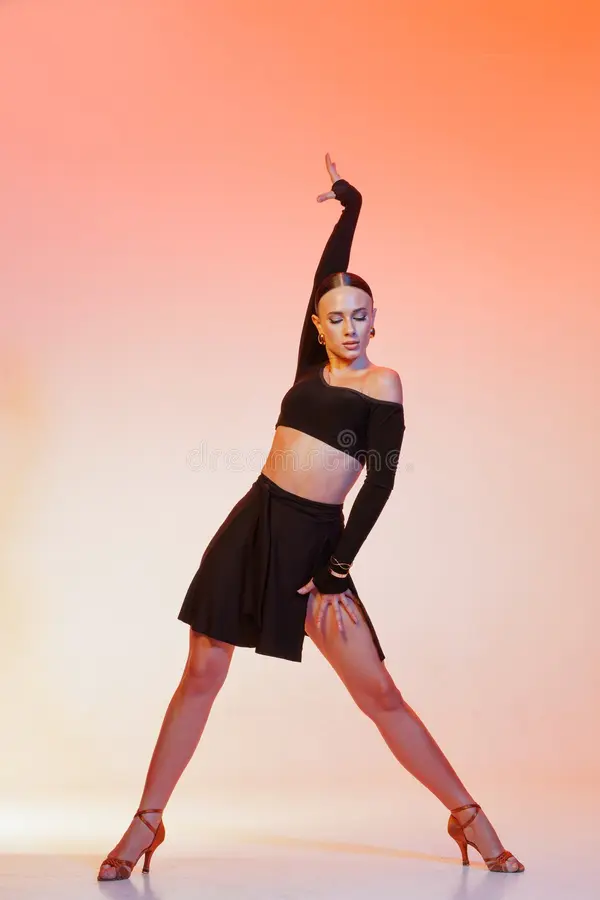
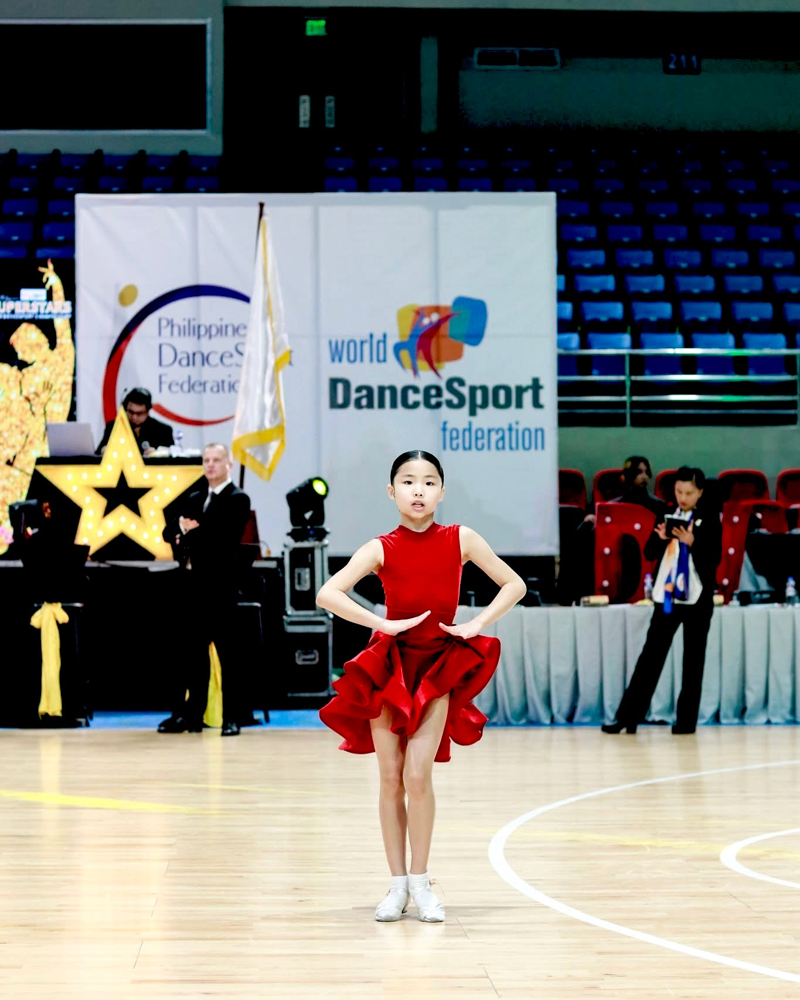
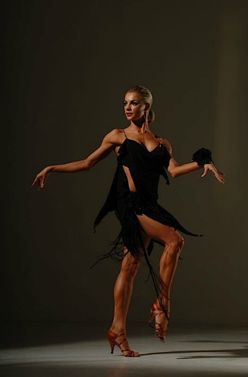
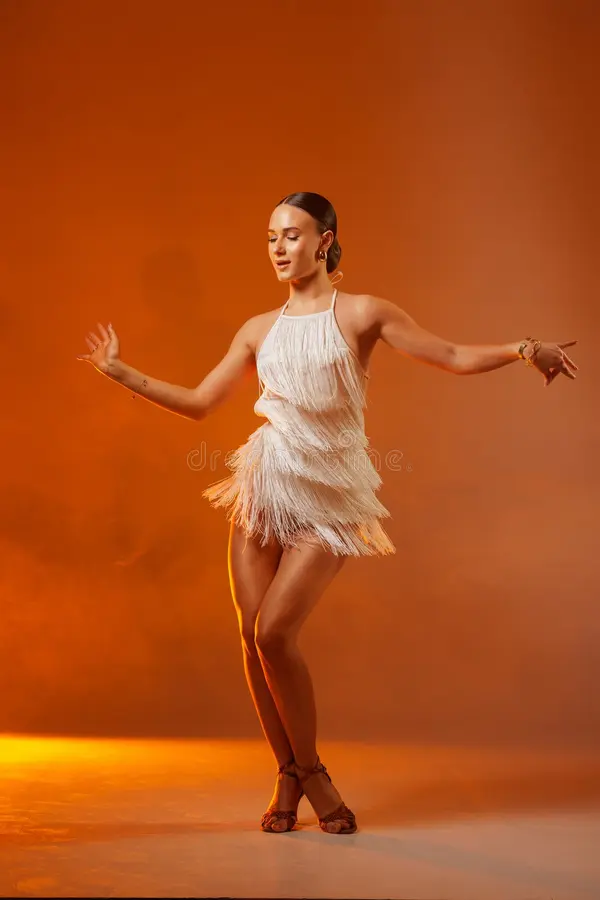
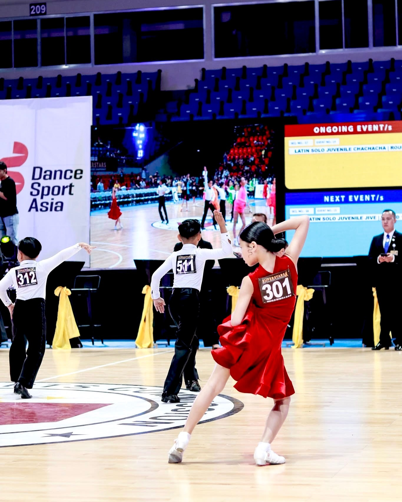
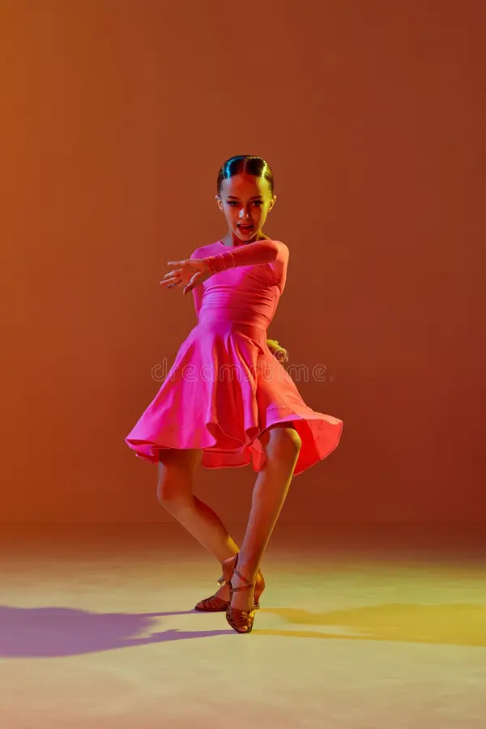

Бүжгийн спортын Соло төрөл
“Латин соло” гэдэг нь Latin Ballroom бүжгийн төрлүүдийг ганцаараа бүжиглэх хэлбэр юм. Энэ нь хосын латин бүжгийн техник, хөдөлгөөн, ритмийг хадгалаад түүнгүйгээр өөрийн биеийн илэрхийлэл, хэмнэл, гоё хөдөлгөөнөөр бүжиглэдэг хувилбар юм.





